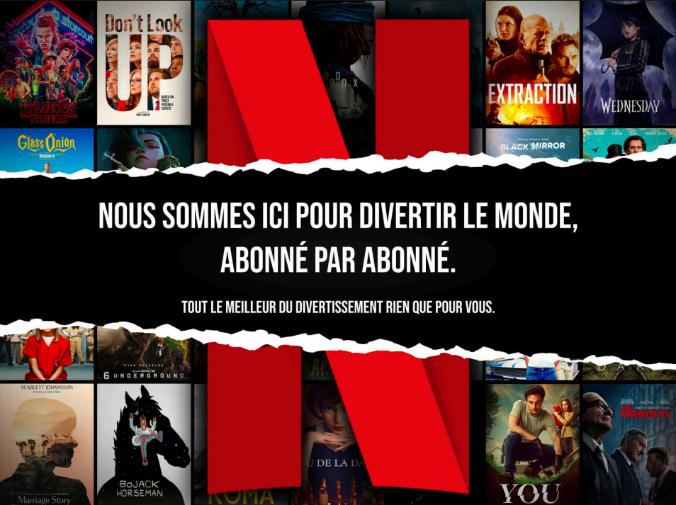
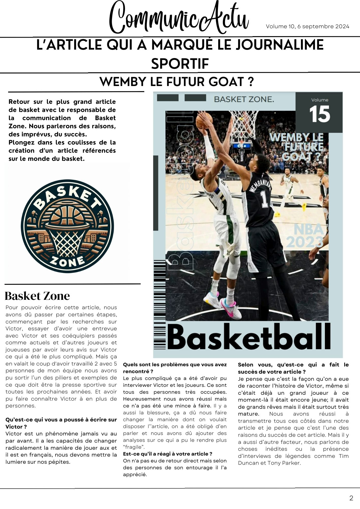
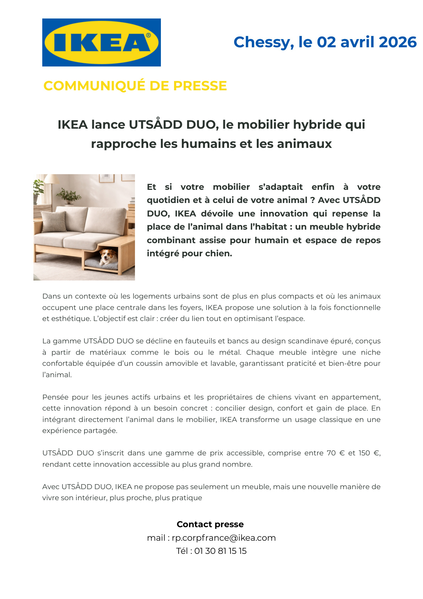
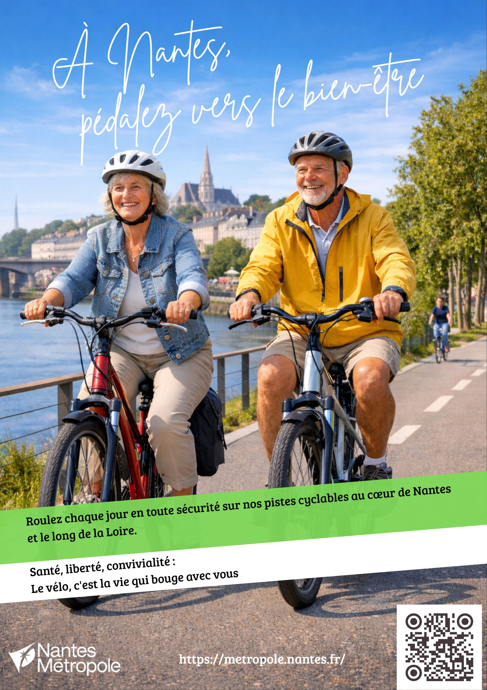
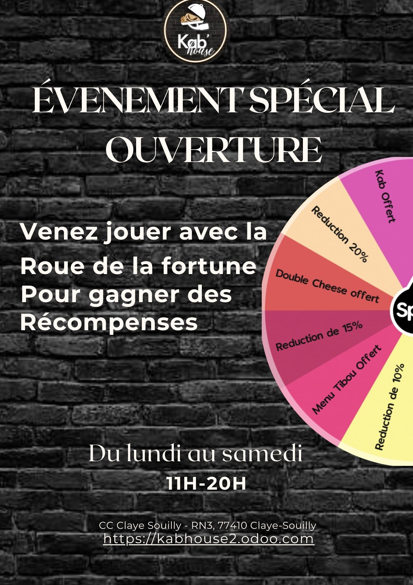
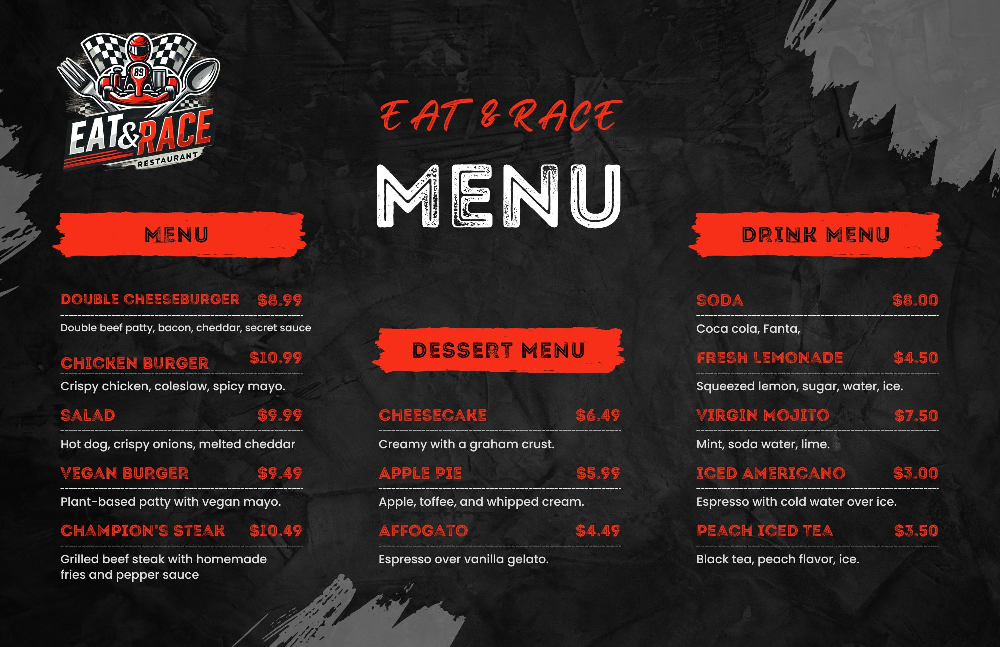
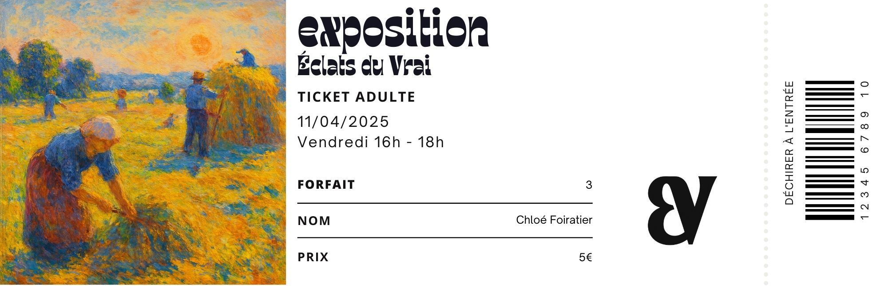
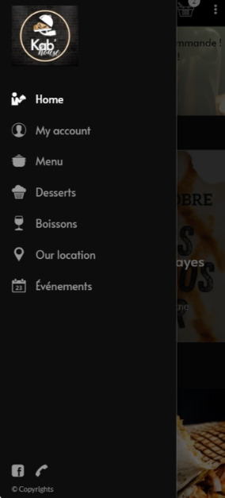
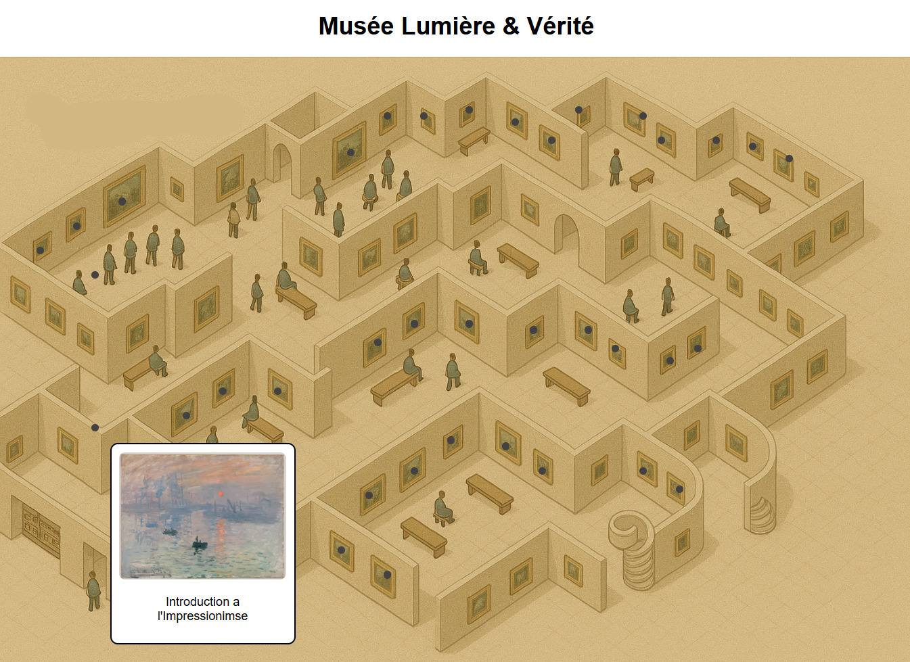
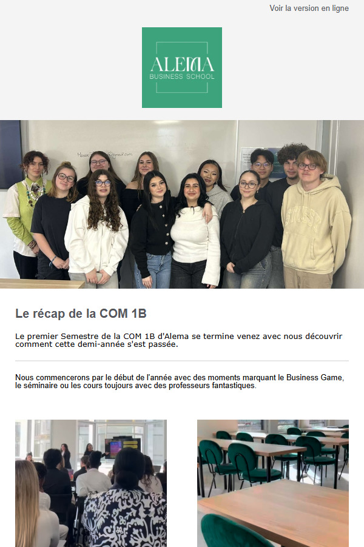

2 visuels

Concept Netflix
Un brief, deux directions opposées : une affiche qui sature l’œil, une autre qui laisse parler le vide. Ce projet m’a appris à maîtriser des registres visuels radicalement différents.
Cette page regroupe mes réalisations en quatre catégories : print, réseaux sociaux, digital et audiovisuel. Quatre créations sont particulièrement importantes dans mon parcours — elles racontent une progression : d'un premier essai hésitant jusqu'à la maîtrise complète d'un projet de A à Z.
Affiches, supports print, direction artistique — de la couverture magazine au flyer en passant par le menu et le ticket.

Un brief, deux directions opposées : une affiche qui sature l’œil, une autre qui laisse parler le vide. Ce projet m’a appris à maîtriser des registres visuels radicalement différents.

Ma toute première création en BTS. Ce qui compte ici, c’est moins le résultat que ce qu’il représente : le point de départ d’une vraie progression.

Affiche pour une sneaker modulable : composition éclatée des pièces, slogan fort et présentation claire de l'offre tarifaire.

Communiqué de presse rédigé selon les codes professionnels du genre — structure, ton institutionnel et format journalistique maîtrisés.

Affiche de sensibilisation sur la mobilité douce et la pratique du vélo.

Composition sur fond noir autour du flacon Wood Sage & Sea Salt — mise en scène des ingrédients naturels dans un univers luxe et minimaliste.

Flyer promotionnel conçu pour soutenir l’ouverture et valoriser l’offre commerciale.

Support commercial dans un univers visuel racing.

Ticket d’entrée pensé comme une déclinaison du projet d’exposition.
Interfaces, newsletters, projets web et contenus digitaux pensés pour l’expérience utilisateur et la diffusion en ligne.

Prototype mobile regroupé en une seule création avec deux vues d’interface.

J’ai codé entièrement un musée interactif sous VS Code : chaque point de la carte révèle un artiste et ses œuvres. Avec un Kahoot et des bonbons à la clé pour tester les connaissances.

Newsletter regroupant trois captures pour montrer la structure complète du contenu.
Contenus audio et vidéo, spots radio et vidéos conçus pour transmettre un message de manière plus vivante.
Spot radio travaillé autour de la voix, du rythme et d’un message direct.
Spot radio autour d’un ton plus ludique et d’une promesse plus publicitaire.
30 secondes pour donner envie aux jeunes de faire le tri, en utilisant les codes hip-hop. Script, tournage, montage : tout de A à Z. Mon projet audiovisuel le plus abouti.
↗ Cliquer pour voir la vidéo, le storyboard et le tableau synoptique
Série de 4 vidéos réalisées pour une émission culinaire — cadrage, lumière et montage travaillés pour valoriser chaque recette.
Spot publicitaire réalisé intégralement — de l'écriture du script au montage final. Une production A à Z pour la marque Accro.